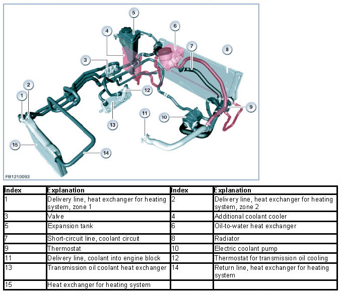
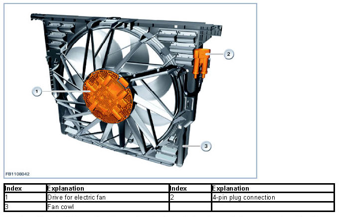
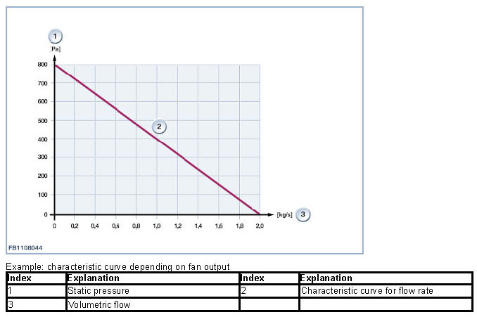
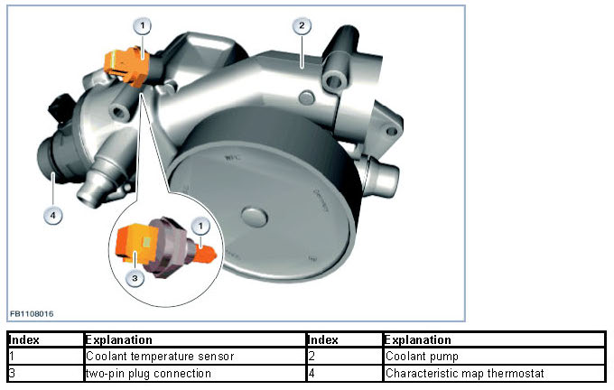
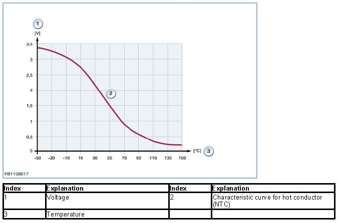
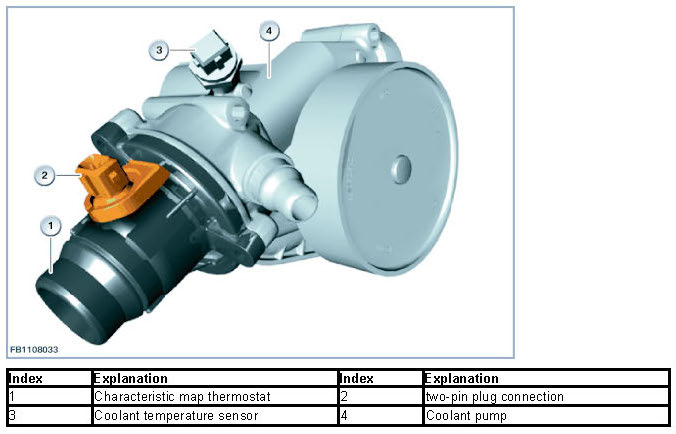
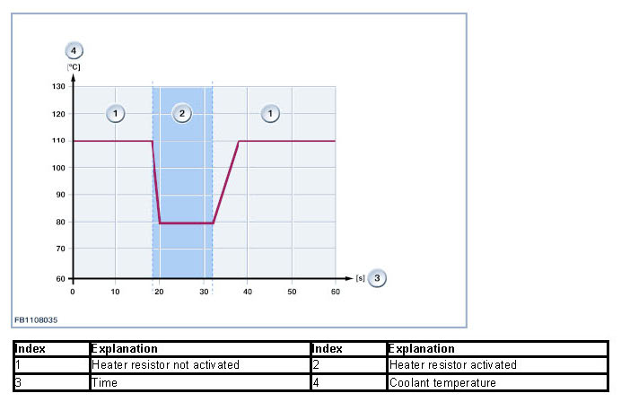
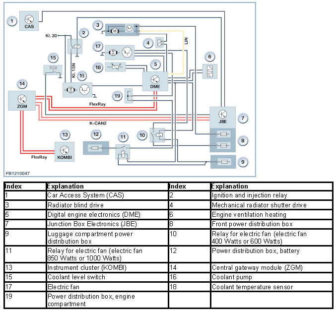
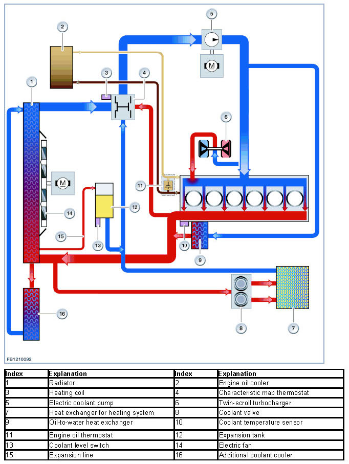

Cooling System: Description and Operation
Engine Cooling
Engine cooling
The engine cooling of the N55 engine consists of cooling the coolant and the engine oil. Depending on the version, different types of engine oil cooling are used. In the variant for hot countries, decoupling the engine oil cooler from the coolant circuit prevents a heat contribution via the engine oil to the coolant of the N55 engine.
The European version has been fitted with an additional coolant cooler on the left-hand side of the vehicle. The additional coolant cooler is connected to the coolant lines parallel to the radiator, thus enlarging the surface area for engine cooling. Engine oil cooling is implemented by means of an oil-to-water heat exchanger.
A turbocharged engine with direct fuel injection makes strong demands on the engine cooling. On the N55 engine, however, no separate coolant pump is required for the twin-scroll exhaust turbocharger.
The components highlighted in red in the following illustration are only present in the European version.

For the cooling system with electric coolant pump, the possibilities of the conventional cooling system are exploited. The heat management determines the current cooling requirement and regulates the cooling system accordingly.
Under certain circumstances, the coolant pump can even be switched off completely, for example to heat up the coolant in the warm-up phase.
If the engine is not running but very hot, the coolant pump will also work with the engine at a standstill.
The cooling power can be requested independent of the engine speed. The heat management now means that, over and above the map thermostat, various characteristic maps can be used for control of the coolant pump. This enables the Digital Engine Electronics (DME) to adapt the coolant temperature to the driving characteristics.
The Digital Engine Electronics (DME) regulate the following temperature range:
- Economy mode: 108 °C
- Normal mode: 104 °C
- High mode: 95 °C
- High mode and control operation by characteristic map thermostat: 90 °C.
If the Digital Engine Electronics (DME) detect the economical operating range "Economy" due to the driving characteristics, the DME regulates to a higher temperature (108 °C). In this temperature range, the engine is operated with a relatively fuel requirement. The friction inside the engine is reduced at higher temperature. The temperature increase thus favor the lower fuel consumption in the low load range. In the mode "High and control by the characteristic map thermostat" mode, the driver wants to use the optimized power output development of the engine. To allow this, the temperature in the cylinder head is lowered to 90 °C. This reduction le ads to better cylinder filling, which increases the torque of the engine. The Digital Engine Electronics (DME) can now regulate to a certain operating range adapted to each driving situation.
The coolant temperature influences:
- Fuel consumption
- Power
- Factor of quality of the mixture formation
- Pollutant emission
- Mechanical load on the components.
The optimization of these variables does not permit a fixed temperature value if there are different speed and load states. The optimization requires a temperature range that corresponds to each situation. The engine cooling achieves an approximation of the optimal temperature.
Signals for calculation by the Digital Engine Electronics (DME) are:
- Engine speed
- Load
- Driving speed
- Intake air temperature
- Coolant temperature.
On the basis of the above signals, the Digital Engine Electronics (DME) calculates the optimal coolant temperature for each situation. The coolant temperature is influenced by specific heating of the wax element in the characteristic map thermostat as well as requirement-oriented activation of the electric fan. At full load, low coolant temperatures improves the cylinder filling. Furthermore, a low coolant temperature reduces the risk of the engine knocking. This can be a positive influence on the power output and torque.
Brief component description
The following components are described for engine cooling:
- Electric fan
- Coolant temperature sensor
- Characteristic map thermostat
- Cooling ducts.
Electric fan
The power output of the electric fan depends on the version:
- 400 Watts
- 600 Watts
- 850 Watts
- 1000 Watts
The electric fan is arranged behind the cooler. The Digital Engine Electronics (DME) activate the electric fan. A new feature is that the power supply from terminal 30 via a relay comes from the Digital Engine Electronics (DME).
The electric fan is controlled by the Digital Engine Electronics (DME) via a pulse-width-modulated signal (evaluation by electronic circuitry in the electronics of the electric fan). The Digital Engine Electronics (DME) control the various electric fan speeds by means of a pulse-width-modulated signal (between 7% and 93%). Pulse duty factors less than 7% and greater than 93% do not trigger activation but rather they are used for fault recognition purposes. The speed of the electric fan is dependent on the coolant temperature at the coolant outlet (radiator) and the pressure in the air conditioning system. When the car's driving speed increases, the speed of the electric fan decreases.

The drive of the electric fan is a brushless motor. The electric fan has its own electronic evaluation unit and its speed is regulated by a pulse-width modulated signal. The pulse duty factor in the normal operating mode (100 Hz) is converted into a speed signal.
- 7% pulse duty factor: Standby mode (electronic evaluation unit is kept awake)
- 11% pulse duty factor: minimum fan speed (33 % of rated speed)
- 93% pulse duty factor: maximum fan speed
- 97% pulse duty factor: command for self-diagnosis of the electronic evaluation unit.
For the after-run of the electric fan, the Digital Engine Electronics (DME) lower the frequency to 10 Hz. The pulse duty factor is used to select the time (maximum 11 minutes) and speed of the electric fan.
The permitted operating temperature lies between -20 °C and 120 °C. The static pressure lies between 0 and 0.8 bar.
The following illustration shows the air flow rate of the electric fan.

Coolant temperature sensor
The coolant temperature sensor is bolted onto the housing of the coolant pump.

The coolant-temperature sensor converts the temperature of the coolant into an electrical value (resistance). To do this, a resistance with negative temperature coefficient (NTC) is used. The coolant temperature is one of the measured variables for the following calculations:
- Fuel injection rate
- Nominal idle speed.
A temperature-dependent electrical resistor is used for temperature sensing. The circuit contains a voltage divider where the resistance can be measured depending on the temperature. The resistance is converted into a temperature using a characteristic curve specific to the sensor. An NTC resistor (NTC) is installed in the coolant temperature sensor, whose resistance value drops when the temperature increases.
The resistance changes from 167 k Ohm to 150 Ohm depending on temperature, which corresponds to a temperature of -40 °C to 130 °C.
The electrical voltage at the resistor is dependent on the coolant temperature. There is a table stored in the Digital Engine Electronics (DME) that specifies the associated temperature for each voltage value. This compensates for the non-linear relationship between electrical voltage and temperature.

Characteristic map thermostat
The characteristic map thermostat is also attached to the housing of the coolant pump.

The wax element of the characteristic map thermostat contains a heater resistor. The Digital Engine Electronics (DME) supplies the heater resistor with current. This causes the wax element to expand and close the cylinder head inlet against the spring pressure of a spring. The spring has the task of pressing the characteristic map thermostat back into its rest position when the wax element cools down. With the engine cold, the coolant circuit runs via the cylinder head inlet and characteristic map thermostat to the return line towards the coolant pump.
The Digital Engine Electronics (DME) activate the heating element via a characteristic map depending on the current driving situation.

Cooling ducts
The cooling ducts in the cylinder head are now also used for indirect cooling of the solenoid valve injectors. This means that coolant flows all around the valves and solenoid valve injector. This has reduced the heat contribution to the components.
The cylinder liners are made of diecast aluminium. To optimize engine cooling, the bridges between the cylinders have grooves. Coolant can flow through these grooves from one side of the crankcase to the other and cool down the bridges.
System overview

System functions
The following system functions are described:
- Engine cooling.
Engine cooling
The map thermostat opens and closes, regulated by a characteristic map. This regulating operation can be split into 3 operating ranges:
- Engine cold, map thermostat closed:
The coolant only flows in the engine (short circuit). The coolant circuit is closed. The thermostat is not activated.
- Engine hot, map thermostat open:
The entire volume of coolant flows via the radiator. This results in maximum use of the available cooling power. The characteristic map thermostat is not activated.
- Control range of the map thermostat:
Part of the coolant flows through the radiator. The map thermostat opens as of 105 °C and maintains a constant coolant temperature. In this operating range, the map thermostat can now be used to influence the coolant temperature specifically.
- Economy mode: 108 °C
- Normal mode: 104 °C
- High mode: 95 °C
- High mode and control operation by characteristic map thermostat: 90 °C.
- This enables the setting of a higher coolant temperature in the partial load range of the engine. At higher operating temperatures in the part-load range, friction is reduced. This in turn leads to reduced consumption and pollutant emissions. During full load operation, certain disadvantages are associated with higher operating temperatures (ignition advance reduction due to knocking combustion). A lower coolant temperature is therefore specifically set during full load operation with the assistance of the characteristic map thermostat.
The following illustration shows the operating principle of the engine cooling.

Notes for Service department
Guard
If the temperature of the coolant or of the engine oil becomes excessive during engine operation, certain functions in the vehicle are influenced in such a way that the engine cooling has more energy available.
The measures are divided into 2 operating modes:
1. Guard
- Coolant temperature between 117 °C and 124 °C
- Engine oil temperature between 150 °C and 157 °C.
Measure: power reduction of the climate control (up to 100 %) and of the engine.
2. Emergency
- Coolant temperature between 125 °C and 129 °C
- Engine oil temperature between 158 °C and 163 °C.
Measure: power reduction of the engine (up to approx. 90%).
We can assume no liability for printing errors or inaccuracies in this document and reserve the right to introduce technical modifications at any time.